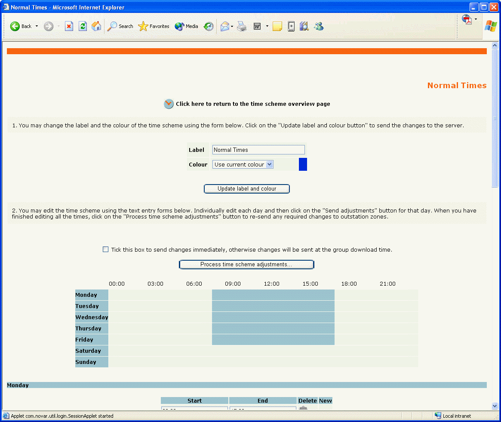

Pour visualiser les temps d'occupation standard d'un groupe de zones horaires :
1 accédez au 963 Server comme indiqué dans la section « Connexion au 963 Server » de ce manuel ;
2 affichez la page dans laquelle se trouve le bouton permettant l'accès au groupe de zones horaires et cliquez sur ce bouton.
Ou :
cliquez sur Calendrier. Une fenêtre supplémentaire s'ouvre avec les groupes de zones horaires ou les dossiers contenant les groupes de zones horaires. Cliquez pour sélectionner le groupe de zones horaires concerné ; si ce groupe de zones horaires n’apparaît pas, cliquez sur le dossier requis pour l'atteindre. Pour revenir au dossier précédent (parent), cliquez sur Remonter d’un niveau.
Après avoir sélectionné le groupe de zones horaires, une page comportant la liste des zones horaires auxquelles il est connecté s’affiche et vous donne accès aux modèles d'horaires exceptionnels et aux exceptions ;
3 cliquez sur Cliquer ici pour atteindre la programmation horaire de ce groupe ;
4 cliquez sur le libellé du programme horaire correspondant aux horaires standard d’occupation ; il est signalé par la mention « Horaires normaux » figurant dans la colonne Type de programme horaire. Une boîte de dialogue semblable à celle présentée ci-dessous s'affiche :
